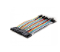
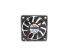
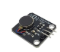
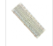
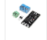
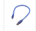
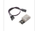

01
Ortam konforu
DHT22 sıcaklık ve nem değerlerini Deneyap Kart ile izleyip belirlenen eşiklerde fanı veya sisteme eklenmesi değerlendirilecek nemlendiriciyi çalıştırmayı hedefliyoruz.
Anne adaylarının ve evcil hayvan doğum alanlarının ortam konforu ile fiziksel duruşunu izlemeyi amaçlayan yapay zekâ destekli iklimlendirme ve ergonomi istasyonu.
Ortam konforunu ve fiziksel duruşu otonom, sessiz bir sistemle desteklemek.
DHT22 sıcaklık ve nem değerlerini Deneyap Kart ile izleyip belirlenen eşiklerde fanı veya sisteme eklenmesi değerlendirilecek nemlendiriciyi çalıştırmayı hedefliyoruz.
Laptop kamerası ve Python/MediaPipe ile duruş noktalarını izleyip uzun süreli sabit kalma veya duruş sapması durumunda bel yastığındaki hafif titreşim motoruyla sessiz geri bildirim vermeyi amaçlıyoruz.
QR ile soru toplamayı ve proje belgelerine dayalı yanıtlarla en sık soruları sunum sonunda ele almayı planlıyoruz.
Sensör ve kamera verisine göre ortam kontrolü ve sessiz duruş geri bildirimi sağlayacak iki akış.
Röle, fan ve nemlendirici sürücü bağlantıları ile gerilim/akım uyumu devre kurulurken doğrulanacak.
 Kablo · 1 adet
Kablo · 1 adetDeneyap Kart ile breadboard bağlantıları.

Kablo · 1 adetPrototip devre bağlantıları.

Fan · 1 adetOrtam hava akışını artırma hedefi.
 Kontrol kartı · 1 adet
Kontrol kartı · 1 adetSensör okuma ve kontrol mantığı.

Haptik · 1 adetSes yerine titreşimli uyarı hedefi.

Devre · 1 adetPrototip devre kurulum alanı.

Sürücü · 1 adetFanı karttan kontrollü sürme planı.

Kablo · 1 adetKartı bilgisayara bağlama planı.

Sensör · 1 adetOrtam sıcaklığı ve bağıl nem ölçümü.
Duruş analizi için bilgisayarın yerleşik kamerası.
İstasyon modelini sayfa içinde inceleyin.
Fareyle sürükleyin veya telefonda dokunup döndürün. Yakınlaştırmak için tekerleği ya da iki parmağı kullanın.
3D model yüklenemedi. Sayfayı yenileyin.
Baş/boyun açısının kişisel referanstan sapması ve uyarı süresi.

Kalibre edilen oturuşa yakın bir kare.

10° eşiği aşıldı. 15 saniyenin 6 saniyesi doldu.

10° eşiğinin sayacı 15 saniyeye ulaştı.
Kontrol mantığı ile tolerans kurallarını ayrı yönetmek planlanıyor.
DHT22 sıcaklık ve nem verilerini Deneyap Kart okuyacak. Eşik aşımlarında sürücü üzerinden fanı, uygun donanım eklenirse nemlendiriciyi etkinleştirmek hedefleniyor.
IClimateStrategy arayüzü insan ve evcil hayvan için farklı tolerans stratejileri tanımlamakta kullanılacak. Kapsülleme sensör verisine kontrollü erişim sağlayacak.
Sunum sırasında sınıftan gelen soruları veriye dayalı bir kapanışa dönüştürmek.
Başlangıç görev paylaşımı ve önerilen katkı oranı. Gerçekleşen iş yüküne göre raporda güncellenecek.
Sistem şeması, Deneyap Kart, DHT22, fan/MOSFET ve deneme kayıtları.
Laptop kamerası, MediaPipe, duruş kuralı ve kamera denemeleri.
GitHub Pages arayüzü, soru kuyruğu ve doküman tabanlı asistan planı.
Taslak plan. Parça teslim tarihine ve testlerden öğrenilenlere göre ekip tarafından güncellenecek.
Teknik yöntem için başvurulacak kaynaklar ve ödev koşulları.
Kastamonu Üniversitesi Tosya MYO, Robotik Uygulamaları Dersi Vize Ödevi Duyurusu, 20.10.2026. Ekip tarafından sağlanan PDF.
Aosong · AM2302 Technical Manual (DHT22) Google AI Edge · MediaPipe Pose Landmarker GitHub Docs · GitHub Pages nedir?